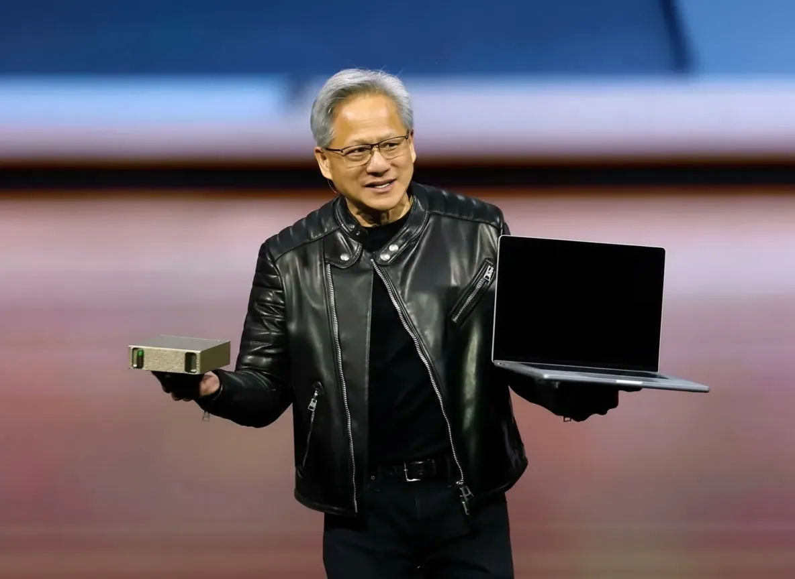

Nvidia RTX Spark Superchip Computex 2026: Nvidia Just Declared War on Intel and AMD — Here's What It Means for Your Next Laptop

Intel and AMD have dominated the PC CPU market for over five decades. That era may be ending. At Computex 2026 in Taipei, Nvidia CEO Jensen Huang announced the RTX Spark superchip — Nvidia's first Arm-based processor designed specifically for personal computers. It is not a GPU with a bolt-on CPU. It is a fully integrated chip that combines Nvidia's Blackwell GPU architecture, a custom Arm-based Grace CPU developed in partnership with MediaTek, and 128GB of unified LPDDR5X memory, all fabricated on TSMC's 3nm process on a single package.
Microsoft, Dell, HP, ASUS, Lenovo, and MSI were all on stage at Computex confirming laptop designs. Nvidia announced over 30 laptop form factors and 10 desktop configurations in development. The first RTX Spark devices ship fall 2026. For the PC industry — for Intel, for AMD, and for Qualcomm, which has been gaining Arm laptop momentum with its Snapdragon X series — this is the most significant competitive entry since Apple M1 changed the definition of what a laptop chip could be.
Table of Contents
- What Jensen Huang Announced at Computex 2026
- RTX Spark Full Technical Specifications
- Grace CPU + Blackwell GPU + 128GB — Why This Architecture Matters
- Performance Comparison: RTX Spark vs Intel, AMD, Qualcomm
- Which Laptop Manufacturers Are Building RTX Spark Devices
- Nvidia Vera — The Data Center Counterpart Explained
- Why Nvidia Is Entering the PC CPU Market Now
- What This Means for Intel and AMD
- RTX Spark Laptops: What to Expect in Fall 2026
- Frequently Asked Questions
What Jensen Huang Announced at Computex 2026
Jensen Huang's Computex 2026 keynote opened with the RTX Spark announcement — a deliberate choice to lead with the most strategically significant development before covering the data center and gaming updates that typically dominate the Computex narrative. The positioning was explicit: Huang described CPUs as the new bottleneck for AI computing at the PC level, and RTX Spark as Nvidia's answer to that bottleneck.
The announcement confirmed three things that the rumour mill had been circulating for months: Nvidia is entering the PC CPU business, the chip uses Nvidia's own Arm-based Grace CPU (previously only deployed in data center configurations), and it is co-developed with MediaTek — a partnership that gives Nvidia experienced Arm CPU silicon expertise while MediaTek gains access to Nvidia's GPU architecture IP.
Microsoft's Panos Panay appeared on stage to confirm that Microsoft would be a launch partner with an RTX Spark-powered Surface device — the first time a Surface has used Nvidia silicon as its primary processor rather than Intel or AMD. The significance of Microsoft endorsing this platform at launch cannot be overstated: it means Windows on Arm software compatibility is prioritised from day one, which was the primary challenge that hampered previous Arm Windows attempts.
RTX Spark Full Technical Specifications
| Component | Specification |
|---|---|
| Product Name | Nvidia RTX Spark (codenamed N1X) |
| CPU Architecture | Custom Arm-based Grace CPU (co-developed with MediaTek) |
| GPU Architecture | Blackwell (equivalent to RTX 5070 laptop GPU class) |
| Fabrication | TSMC 3nm |
| Unified Memory | 128GB LPDDR5X |
| Memory Bandwidth | Up to 546 GB/s (shared CPU+GPU pool) |
| CPU Cores | 16 performance cores (Grace architecture) |
| AI Performance | Up to 600 TOPS (trillion operations per second) |
| TDP Range | 35W to 100W (configurable per device) |
| Target Devices | Thin-and-light laptops, creator workstations, AI developer PCs |
| Launch Window | Fall 2026 |
| Launch Partners | Microsoft, Dell, HP, ASUS, Lenovo, MSI |
Grace CPU + Blackwell GPU + 128GB — Why This Architecture Matters
The fundamental insight behind RTX Spark's architecture is that the bottleneck for AI workloads on laptops is not GPU compute — it's memory bandwidth and CPU-GPU communication overhead. In a traditional laptop, the CPU and GPU are separate chips connected via PCIe lanes. When an AI model runs on the GPU, data must travel from system RAM (managed by the CPU) across the PCIe bus to GPU VRAM, be processed, and the results transferred back. That round trip has latency and bandwidth limits that become the limiting factor when running large models or agentic AI workflows that require constant CPU-GPU coordination.
RTX Spark eliminates the PCIe bottleneck entirely by placing the CPU and GPU on the same package with a shared 128GB unified memory pool. Both the Grace CPU and the Blackwell GPU access the same physical memory directly, with no transfer latency between them. The 546 GB/s memory bandwidth available to the unified pool is significantly higher than what either the CPU or GPU would have access to independently in a traditional discrete configuration.
The 128GB figure is particularly significant for AI developers. Running a 70-billion-parameter language model at full precision requires approximately 140GB of memory — currently impossible on any laptop. RTX Spark's 128GB means that quantised versions of 70B models, or full-precision smaller models in the 30-40B range, can run entirely on a laptop without cloud connectivity. That's a meaningful capability boundary that no previous laptop chip has reached.
Also Read
More Technology stories →Performance Comparison: RTX Spark vs Intel, AMD, Qualcomm
| Feature | Nvidia RTX Spark | Intel Core Ultra 200V | AMD Ryzen AI Max 395 | Qualcomm Snapdragon X Elite |
|---|---|---|---|---|
| CPU Architecture | Arm (Grace) | x86 (Lion Cove) | x86 (Zen 5) | Arm (Oryon) |
| GPU | Blackwell (RTX 5070 class) | Intel Xe2 (Arc 140T) | Radeon 890M | Adreno X1 |
| Unified / Shared Memory | 128GB | Up to 32GB (shared) | Up to 96GB (LCDDR5X) | Up to 64GB |
| AI TOPS | ~600 TOPS | ~120 TOPS (NPU only) | ~50 TOPS (NPU) | ~75 TOPS (NPU) |
| GPU Performance Tier | Discrete mid-range class | Integrated | Integrated (strong) | Integrated |
| Fabrication Node | TSMC 3nm | Intel 18A/TSMC N3 | TSMC 3nm | TSMC 4nm |
| Windows Arm Compatibility | Native | Full x86 native | Full x86 native | Native (Prism emulation) |
The GPU performance gap between RTX Spark and every other integrated solution is the most dramatic differentiator. Intel's Xe2 graphics, AMD's Radeon 890M, and Qualcomm's Adreno X1 are all capable integrated GPUs, but none approach the Blackwell GPU class that RTX Spark deploys. Nvidia's Blackwell architecture is the same foundation used in discrete desktop and laptop RTX 50-series cards — RTX Spark puts that GPU silicon into a thin-and-light laptop platform alongside the CPU, which is an entirely new category of device.
The 600 TOPS AI performance figure is also substantially higher than competing platforms' NPU-only TOPS ratings. Intel, AMD, and Qualcomm count only dedicated NPU (Neural Processing Unit) TOPS in their headline figures because their GPU contributions to AI are less significant. RTX Spark's figure includes the full Blackwell GPU's AI compute capability, which is where the real gap lies for AI developers running inference workloads.
Key Takeaways
- Nvidia RTX Spark combines a Blackwell GPU (RTX 5070 laptop class), a custom Arm Grace CPU, and 128GB of unified LPDDR5X memory on a single 3nm chip — the most GPU-capable integrated processor ever put in a thin-and-light laptop.
- Microsoft, Dell, HP, ASUS, Lenovo, and MSI are all confirmed launch partners for fall 2026, with 30+ laptop models and 10 desktop configurations planned — this is a broad ecosystem launch, not a niche product.
- The strategic threat to Intel and AMD is real: Nvidia is targeting the exact market where x86 processors have no GPU competition — AI developer laptops, creator workstations, and high-performance thin-and-lights that currently require a discrete GPU add-on card to match RTX Spark's GPU output.
Which Laptop Manufacturers Are Building RTX Spark Devices
The breadth of the manufacturer lineup announced at Computex is one of the most significant aspects of the RTX Spark launch. Previous Arm-based PC launches — Microsoft's Surface Pro X in 2019, Qualcomm's Snapdragon X Elite push in 2024 — launched with limited OEM support that constrained their commercial reach. Nvidia has secured six major laptop manufacturers at announcement, which gives RTX Spark immediate retail presence across price points and form factors.
Microsoft is the most strategically important partner. A Surface device running RTX Spark at launch sends a clear signal that Windows 11 supports this platform as a first-class experience. Microsoft's history of using Surface products to set reference designs for the broader Windows ecosystem means OEM partners will build against the Surface RTX Spark experience as their benchmark.
Dell's XPS line is expected to be the high-end consumer vehicle for RTX Spark. Dell's XPS 13 and XPS 15 are consistently the reference ultra-thin premium Windows laptops, and RTX Spark integration in that lineup would dramatically expand the performance ceiling of the form factor.
HP's Spectre and OMEN brands are expected to split the RTX Spark lineup — Spectre for the thin-and-light premium consumer, OMEN for the gaming and creator adjacent market where RTX Spark's GPU performance is most compelling against current discrete GPU options.
ASUS, Lenovo, and MSI cover the gaming, workstation, and enterprise segments respectively. MSI's involvement is particularly noteworthy — the gaming laptop specialist committing to RTX Spark suggests Nvidia has made the case that the platform can serve genuine gaming use cases, not just AI developer and creator workflows.
Nvidia Vera — The Data Center Counterpart Explained
Alongside the RTX Spark consumer announcement, Jensen Huang confirmed that Nvidia Vera — the data center version of the same Grace Arm CPU architecture — is now in full production. Vera is not a laptop chip; it's designed for AI server infrastructure and is paired with Nvidia's Blackwell GPU in rack-scale data center configurations.
The early production customer list for Vera is a who's-who of AI infrastructure: OpenAI, Anthropic, xAI (Elon Musk's AI company), Dell Technologies, Oracle, and CoreWeave. Nvidia states that Vera-based systems produce AI tokens 1.8 times faster than traditional x86 server CPUs — a significant efficiency improvement for agentic AI workflows that require constant CPU-GPU coordination.
The relevance of Vera to the RTX Spark consumer announcement is architectural: both chips use the same Grace CPU design philosophy, adapted for their respective deployment scales. The data center validation of Grace CPU performance gives Nvidia credible technical evidence that its Arm CPU delivers on its performance claims — it's not a first-generation experiment in the data center, it's in production at OpenAI and Anthropic before the consumer version ships in laptops.
Why Nvidia Is Entering the PC CPU Market Now
Nvidia's move into PC CPUs isn't a sudden strategic pivot — it's the natural extension of a direction the company has been building toward since acquiring Arm (the acquisition that US regulators blocked in 2022, but which gave Nvidia extensive architectural insight into Arm's designs and prompted the Grace CPU development internally).
The timing in 2026 is driven by three converging factors. First, Qualcomm's Snapdragon X Elite proved in 2024 that Arm-based Windows laptops could be commercially successful and software-compatible at mainstream scale. Qualcomm demonstrated that the x86 software compatibility barrier, which had blocked previous Arm Windows attempts, was manageable with Windows 11's x86 emulation layer and growing native Arm application support.
Second, Apple's M-series chips demonstrated that a chip maker with its own CPU and GPU designs could dominate both performance and efficiency benchmarks simultaneously — something that Intel's CPU-plus-discrete-GPU approach never achieved in thin-and-light form factors. Nvidia's architecture follows the same integrated CPU+GPU+unified memory philosophy that makes Apple Silicon so efficient.
Third, and most directly driving the timing, is the agentic AI transition. Nvidia's Jensen Huang has been explicit in describing the shift from standalone AI queries (you ask, the model answers) to agentic AI workflows (an AI agent autonomously coordinates multiple tasks, manages memory, calls tools, generates output). Agentic workflows are CPU-intensive in ways that single-query AI is not — and this is where the bottleneck argument for RTX Spark is strongest.
What This Means for Intel and AMD
Intel and AMD are not standing still. Intel's Core Ultra 200V series and its upcoming Panther Lake architecture are targeting the same AI performance narrative with Xe2 graphics and NPU improvements. AMD's Ryzen AI Max 395 has already demonstrated competitive AI performance and is in production in premium laptops from multiple manufacturers.
But neither Intel nor AMD can match RTX Spark's GPU performance in an integrated form factor. The Blackwell GPU in RTX Spark is a class above any integrated GPU either company produces, and the 128GB unified memory is a capacity ceiling that neither Intel nor AMD approaches. For the specific use cases Nvidia is targeting — AI model inference, creative workloads with large GPU compute requirements, high-performance gaming without a separate discrete card — the gap is substantial.
The risk for Intel specifically is that Microsoft's RTX Spark Surface commitment signals a diversification away from Intel's historical dominance of the Surface lineup. Intel has been in every generation of Surface since the product launched in 2012. An RTX Spark Surface device in fall 2026, positioned alongside or potentially replacing Intel-based Surface configurations, would be a visible commercial signal of Intel's diminished position in the premium Windows laptop market — not just from Qualcomm's gains, but now from Nvidia as well.
RTX Spark Laptops: What to Expect in Fall 2026
Specific product details beyond the manufacturer confirmations were limited at Computex — pricing, exact model names, and configuration options remain to be announced closer to launch. Based on what was shown and the positioning Nvidia established, some expectations are well-grounded.
The premium thin-and-light segment — Surface, XPS, Spectre — is where RTX Spark launches first. These are the devices where CPU+GPU integration into a single thin design has the most compelling story: a laptop that's 14mm thick with a GPU equivalent to a mid-range discrete card would currently require either compromising on GPU performance or accepting a thicker form factor. RTX Spark eliminates that tradeoff.
Price points will be above the current thin-and-light baseline. RTX Spark devices will not be competing with $999 Snapdragon X Elite laptops. The GPU capability and 128GB memory configuration position this product in the $1,800 to $3,000+ range for initial configurations, competing with premium creator and developer laptops currently populated by Apple MacBook Pro M4 and Intel-based alternatives.
Software compatibility will be the most closely watched aspect of the fall launch. Windows 11 on Arm has improved dramatically since the Snapdragon X Elite launch in 2024 — Adobe Creative Cloud runs natively Arm, as does Microsoft 365, Chrome, and most major developer tools. The gap in application compatibility between Arm and x86 Windows has narrowed to the point where most users wouldn't notice it in daily creative or productivity work. The question for RTX Spark is whether any remaining compatibility gaps affect its target users — AI developers and creative professionals — more than they affect general consumers.
Frequently Asked Questions
What is the Nvidia RTX Spark superchip?
The Nvidia RTX Spark (codenamed N1X) is Nvidia's first Arm-based PC processor, combining a Blackwell GPU (RTX 5070 laptop GPU class), a custom Arm-based Grace CPU co-developed with MediaTek, and 128GB of unified LPDDR5X memory on TSMC's 3nm process. It targets thin-and-light laptops for AI developers, creative professionals, and gamers who need integrated performance that previously required discrete GPU add-ons.
Which laptop brands are launching Nvidia RTX Spark laptops?
Microsoft, Dell, HP, ASUS, Lenovo, and MSI are all confirmed launch partners for fall 2026. Nvidia announced over 30 laptop configurations and 10 desktop configurations across these manufacturers. Microsoft's Surface product is expected to be among the first specific RTX Spark devices shown publicly.
How powerful is RTX Spark compared to Intel, AMD, and Qualcomm?
RTX Spark's GPU performance is in a class of its own for integrated laptop processors — the Blackwell GPU exceeds any integrated GPU from Intel, AMD, or Qualcomm. Its 128GB unified memory is the largest available in any laptop chip, giving it a significant advantage for large AI model inference. On CPU performance, the Grace Arm core is competitive with Intel's Core Ultra and AMD's Ryzen AI, though direct benchmark comparisons will emerge when production hardware ships in fall 2026.
What is Nvidia Vera CPU and how does it relate to RTX Spark?
Nvidia Vera is the data center version of the Grace Arm CPU, paired with Blackwell GPUs in server configurations. It is now in full production with OpenAI, Anthropic, xAI, Dell, Oracle, and CoreWeave as early customers. Vera produces AI tokens 1.8x faster than traditional x86 server CPUs. RTX Spark uses the same Grace CPU architecture adapted for consumer laptop power envelopes — data center validation of the architecture before consumer launch.
Why is Nvidia entering the PC CPU market now?
Three converging reasons: Qualcomm proved Arm Windows is commercially viable at scale in 2024; Apple proved integrated CPU+GPU+unified memory beats discrete combinations in efficiency; and the shift to agentic AI creates CPU-GPU bottlenecks that RTX Spark's unified architecture specifically addresses. Nvidia targets a $200 billion CPU market opportunity with RTX Spark as its entry product.
Conclusion
Nvidia announcing its own PC CPU at Computex 2026 is not a minor product launch — it is a structural shift in one of technology's most important markets. Intel and AMD have built their entire businesses around x86 CPU dominance in PCs. Qualcomm has been gradually eroding that with Arm-based Windows success. Apple already demonstrated with M1 in 2020 what happens to an incumbent when a better-integrated architecture enters a market it used to own. Nvidia just added a fourth competitor to what was recently a two-company race.
The RTX Spark's GPU performance advantage is real and substantial. The 128GB unified memory ceiling is genuinely new territory for laptop computing. Microsoft, Dell, HP, ASUS, Lenovo, and MSI all committing to RTX Spark for fall 2026 is not a symbolic endorsement — it's a commercial commitment that will put these devices in retail stores, on review sites, and in the hands of the AI developers and creative professionals who are the most demanding and influential early adopters in the Windows market.
Whether RTX Spark becomes the next Apple M1 moment for Windows — a chip that fundamentally redefines performance expectations for the platform — depends on fall 2026 execution: real battery life numbers, actual benchmark performance under sustained load, software compatibility in production, and pricing that developers and creators can justify. The architecture makes the case. The products need to deliver it.

Marcus J. Holloway
Senior Tech Educator & AI Researcher
Technology educator and AI analyst with 15+ years of experience tracking artificial intelligence, enterprise software, and the companies building the future of computing. Has covered every major AI lab — OpenAI, Anthropic, Google DeepMind, and Meta AI — since their founding. Dedicated to making complex technical and policy developments accessible to students, developers, and professionals through Ultimate Schooling.
💬 Questions or Comments?
Have a question or want to share your thoughts? Leave a comment below!